Setup Project
First we need to setup our project so we can get started. To set it up, we'll create a new C# solution that contains a MonoGame Game Library project and a MonoGame Cross Platform Desktop (DesktopGL) project.
Tip
A MonoGame Game Library project is just a standard C# Class Library project that comes pre-configured with the MonoGame NuGets and a few common files.
Create New MonoGame Game Library Project
To first start setting up our new project, we'll need to first create a new MonoGame Game Library project. To do this, complete the following:
- Open Visual Studio and select the Create a New project option
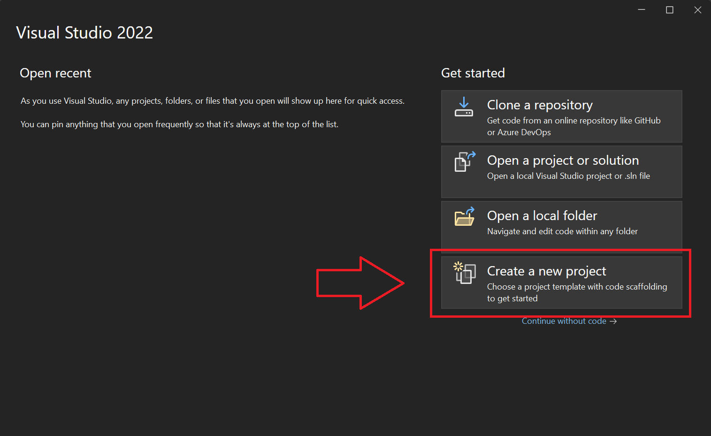
- In the Create a new project window, choose the MonoGame Game Library (MonoGame Team) project template and click Next
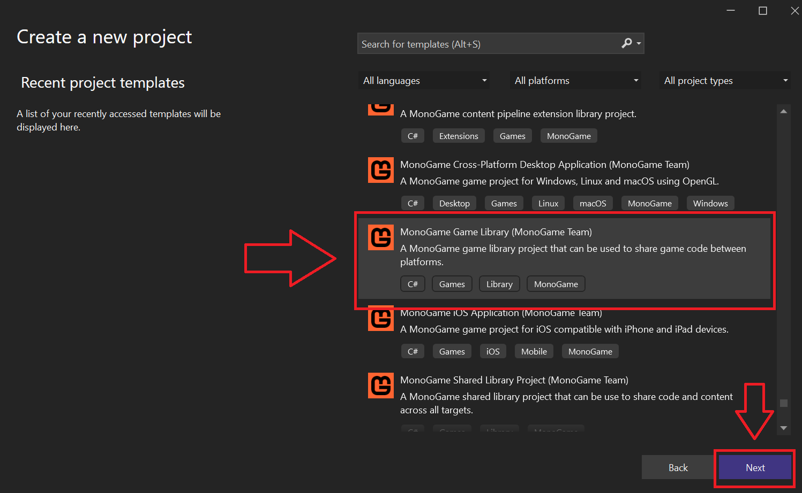
- Choose a name and location for the project. For the purpose of this tutorial, I have named it SceneLibrary. Once you have chosen a name and location, click the Create button.
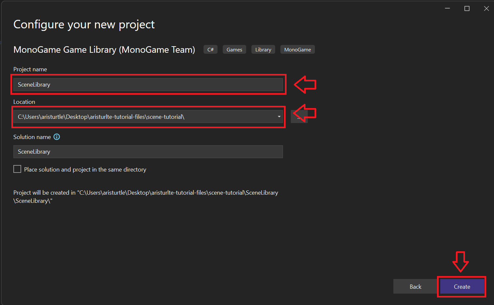
- Once the project is created, you should see the following in the Solution Explorer panel:
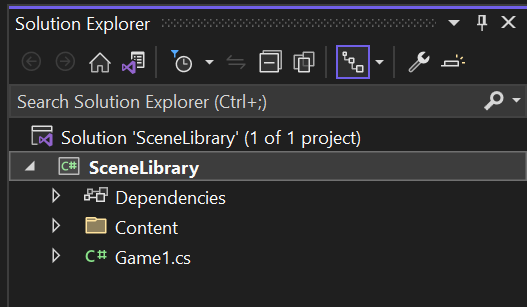
Setup the MonoGame Game Library Project
Next, we need to adjust our MonoGame Game Library project for what we are creating. To do this, complete the following
- For the purposes of what we are creating we do not need the Content directory or the Game1.cs file here, so delete both of these
Note
The Content directory and Game1.cs file can be useful when creating a full MonoGame game library, however we don't need them for our purposes.
- Right-click on the SceneLibrary project and select Add > New Class
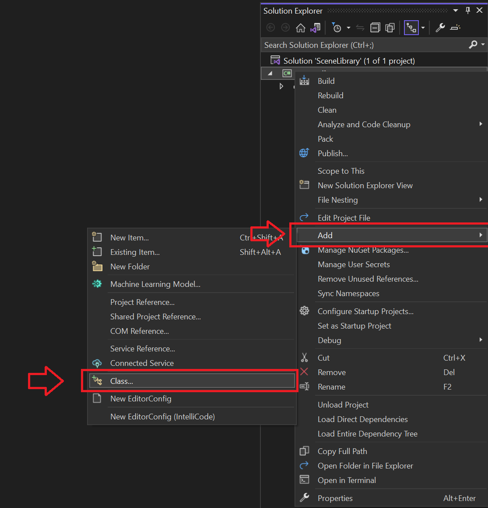
- In the Add New Item window, name the new class file Scene.cs then click the Add button to add it to our project.
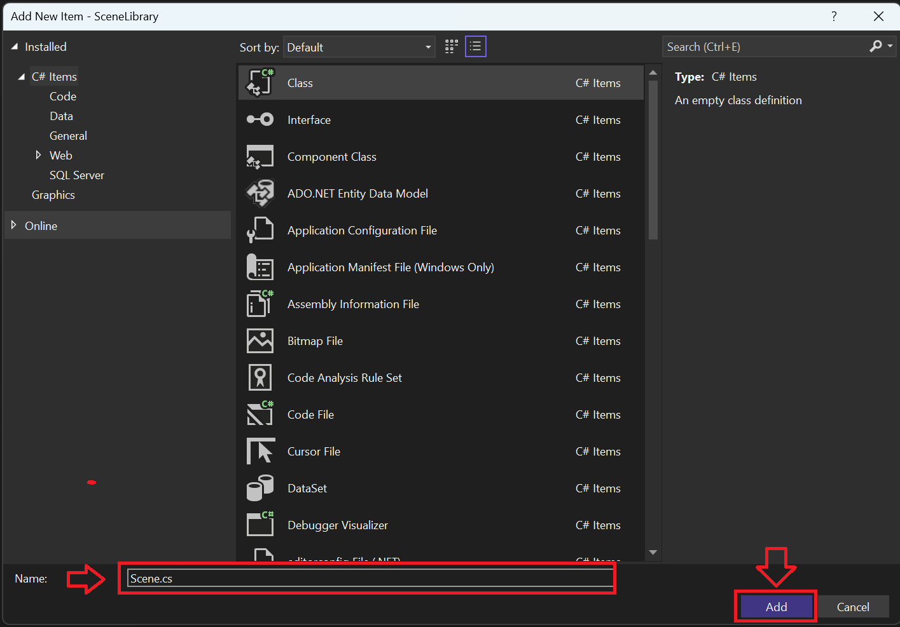
Create new MonoGame Cross Platform Desktop Project
Next, we'll need to create a new MonoGame Cross Platform Desktop project that we can use to test out our SceneLibrary and see it in action when we set it all up.
To do this, complete the following
- In the Solution Explorer panel, right click on the SceneLibrary solution and choose Add > New Project
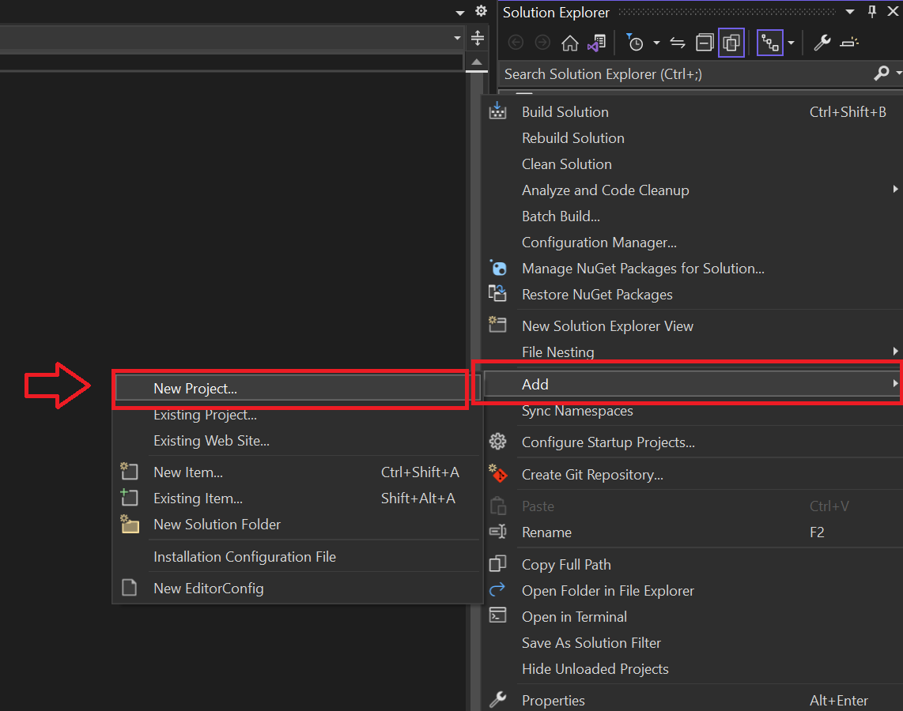
- In the Add new project window, choose the MonoGame Cross-Platform Desktop Application (MonoGame Team) project template, then click the Next button.
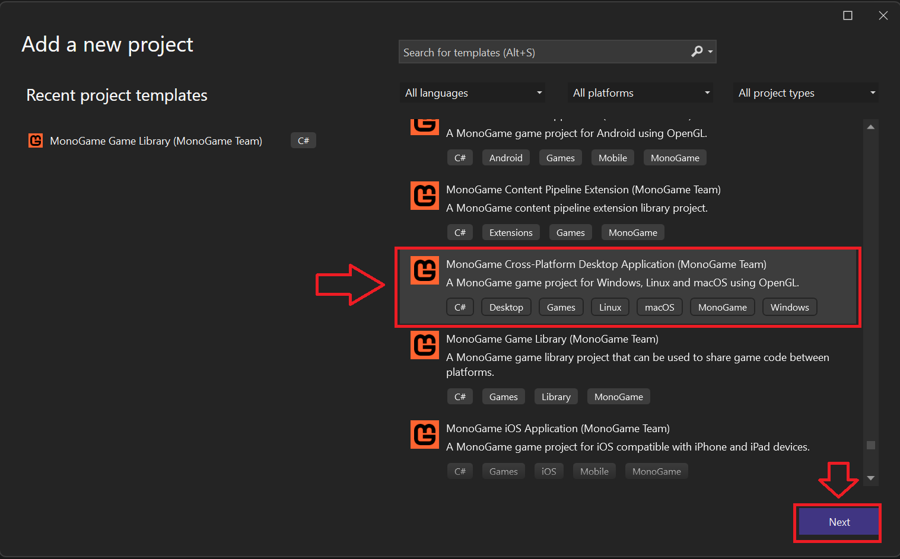
- In the Configure your new project window, enter a name for your project then click the Create button. For the purposes of this tutorial, I have named my project ExampleGame.
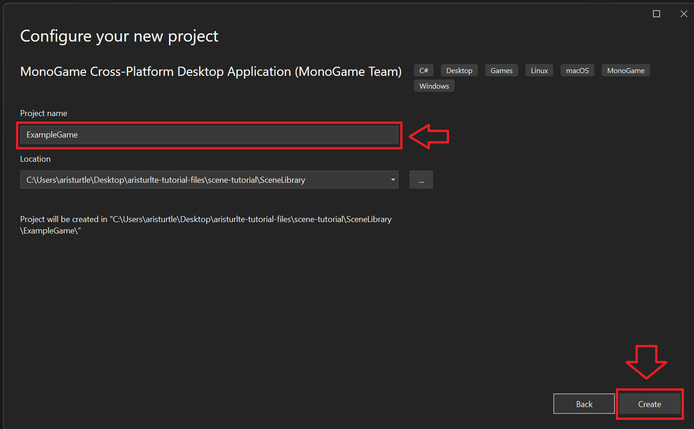
- Once created, you're Solution Explorer panel should now look similar to the following with both our MonoGame Cross-Platform Desktop Application project and the MonoGame Game Library project.
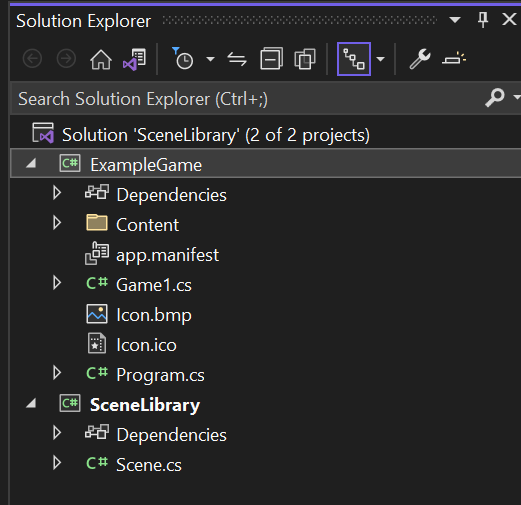
- Finally, we need to add a project reference to the SceneLibrary project in our ExampleGame project. To do this, right-click on the ExampleGame project in the Solution Explorer and select
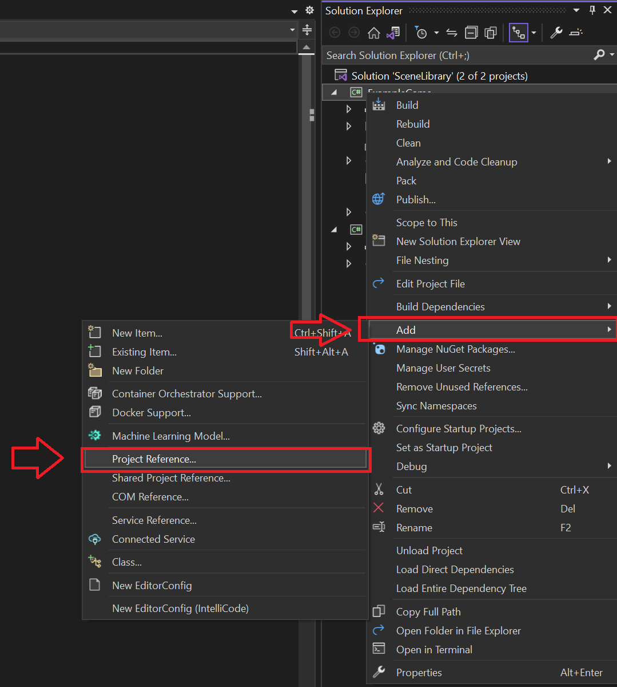
Then in the Reference Manager window, check the box next to SceneLibrary to add it as a reference, then click the Ok button at the bottom.
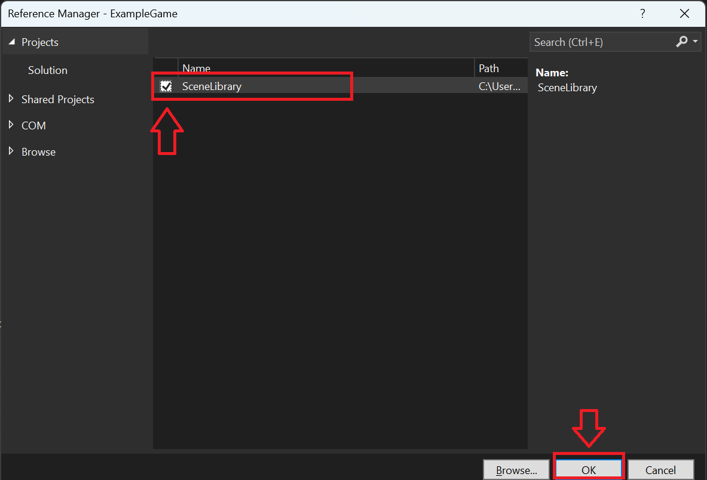
Next Steps
Now that we have our base project setup, on the next page we'll setup the code for our Scene.cs class and go over it.